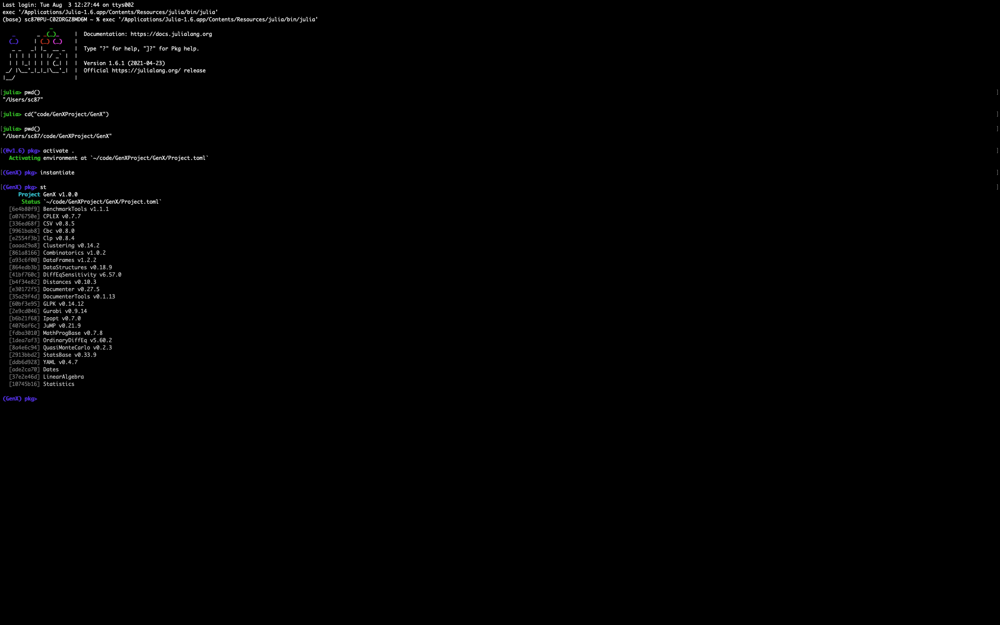

Requirements
GenX currently exists in version 0.3.0 and runs only on Julia v1.6.x and v1.5.x series, where x>=0 and a minimum version of JuMP v0.21.x. There is also an older version of GenX, which is also currently maintained and runs on Julia 1.3.x and 1.4.x series (For those users who has previously cloned GenX, and has been running it successfully so far, and therefore might be unwilling to run it on the latest version of Julia: please look into the GitHub branch, old_version). It is currently setup to use one of the following open-source freely available solvers: A) Clp for linear programming (LP) problems and (B) Cbc for mixed integer linear programming (MILP) problems. We also provide the option to use one of these two commercial solvers: C) Gurobi, and D) CPLEX. Note that using Gurobi and CPLEX requires a valid license on the host machine. There are two ways to run GenX with either type of solver options (open-source free or, licensed commercial) as detailed in the section, Running an Instance of GenX.
The file julenv.jl in the parent directory lists all of the packages and their versions needed to run GenX. You can see all of the packages installed in your Julia environment and their version numbers by running pkg> status on the package manager command line in the Jula REPL.
Running an Instance of GenX
Download or clone the GenX repository on your machine in a directory named 'GenX'. Create this new directory in a location where you wish to store the GenXJulEnv environment.
The Run.jl file in each of the example sub-folders within Example_Systems/ provides an example of how to use GenX.jl for capacity expansion modeling. The following are the main steps performed in the Run.jl script:
- Establish path to environment setup files and GenX source files.
- Read in model settings
genx_settings.ymlfrom the example directory. - Configure solver settings.
- Load the model inputs from the example directory and perform time-domain clustering if required.
- Generate a GenX model instance.
- Solve the model.
- Write the output files to a specified directory.
Here are step-by-step instructions for running Run.jl, following the two slightly different methods:
Method 1: Creating the Julia environment and installing dependencies from Project.toml file
- Start an instance of the Julia kernel from inside the GenX/ folder (which corresponds to the GenX repo, that you've just cloned) by typing
julia --project="GenX". - Go to the package prompt by typing
]. You will see that you're within a Julia virtual environment named(GenX). However, at this point, this environment isn't loaded with the dependencies. Typeactivate .to activate the dependecnies in the environment. - If it's your first time running GenX (or, if you have pulled after some major upgrades/release/version) run
instantiatefrom the(GenX) pkgprompt. - If you have an old
Manifest.tomlfile file at the same file hierarchy as theProject.tomlfile and you get an error while running through the above steps, please delete the existingManifest.tomlfile and execute steps 1-3 again. - In order to make sure that the dependecies have been installed, type
stin the package prompt.
Execution of the entire sequence of the four steps above should look like the figure below:
 Figure.Creating the Julia environment and installing dependencies from Project.toml file from inside the GenX folder: Steps 1-4
Figure.Creating the Julia environment and installing dependencies from Project.toml file from inside the GenX folder: Steps 1-4
- Type the back key to come back to the
julia>prompt. - Run the script by executing the command
julia> include(“<path to your case>/Run.jl”). For example, in order to run the ISONESinglezone case within the ExampleSystems/RealSystemExample/, typeinclude("Example_Systems/RealSystemExample/ISONE_Singlezone/Run.jl")from thejulia>prompt (while being still in the GenX i.e. the root level in the folder hierarchy)
Execution of the steps 5 and 6 above should look like the figure below:
 Figure.Creating the Julia environment and installing dependencies from Project.toml file from inside the GenX folder: Steps 5-6
Figure.Creating the Julia environment and installing dependencies from Project.toml file from inside the GenX folder: Steps 5-6
- After the script runs to completion, results will be written to a folder called “Results”, also located in the same directory as
Run.jl.
If however, the user opens a julia kernel, while not yet inside the GenX folder, it's still possible to reach to the GenX folder while being inside the Julia REPL by executing the pwd() command first to check where on the directory structure the user is currently, and then by executing the cd(<path to GenX>) command. Afterwards, the steps are the same as above. This is shown in the three figures below:
 Figure.Creating the Julia environment and installing dependencies from Project.toml file from inside the GenX folder: Changing path to GenX
Figure.Creating the Julia environment and installing dependencies from Project.toml file from inside the GenX folder: Changing path to GenX
 Figure.Creating the Julia environment and installing dependencies from Project.toml file from inside the GenX folder: Steps 1-4
Figure.Creating the Julia environment and installing dependencies from Project.toml file from inside the GenX folder: Steps 1-4
 Figure.Creating the Julia environment and installing dependencies from Project.toml file from inside the GenX folder: Steps 5-6
Method 2: Creating the Julia environment and installing the dependencies by building the Project.toml files by running activation script
- Start an instance of the Julia kernel.
- Make your present working directory to be where the Run.jl is located. To do this, you can use the Julia command
julia> cd(“/path/to/directory/containing/file), using the actual pathname of the directory containing Run.jl. Note that all your inputs files should be in this directory in addition to Run.jl. Details about the required input files can be found in the documentation linked above or in the examples provided in the folderExample_Systems/. You can check your present working directory by running the commandjulia> pwd(). - Uncomment the following lines of code at the beginning of the
Run.jlfile (which is currently commented out):environment_path = "../../../package_activate.jl"include(environment_path) - Run the script by executing the command
julia> include(“Run.jl”). - After the script runs to completion, results will be written to a folder called “Results”, also located in the same directory as
Run.jl.
Note that if you have not already installed the required Julia packages, you are using a version of JuMP other than v0.21.4, or you do not have a valid Gurobi license on your host machine, you will receive an error message and Run.jl will not run to completion.
If you want to use either of Gurobi or CPLEX solvers, instead or Clp or Cbc do the following:
- Uncomment the relevant lines in the
[deps]and[compat]in the Project.toml file within GenX/ folder. If the CPLEX and/or Gurobi lines are missing, add the following lines to the[deps]:
CPLEX = "a076750e-1247-5638-91d2-ce28b192dca0" Gurobi = "2e9cd046-0924-5485-92f1-d5272153d98b" and the following lines to the [compat]: CPLEX = "0.7.7" Gurobi = "0.9.14" depending on whether you are going to use CPLEX or Gurobi, respectively.
- Uncomment the relevent
using Gurobiand/orusing CPLEXat the beginning of theGenX.jlfile - Set the appropriate solver in the
genx_settings.ymlfile - Make sure you have a valid license and the actual solvers for either of Gurobi or CPLEX installed on your machine
Running Modeling to Generate Alternatives with GenX
GenX includes a modeling to generate alternatives (MGA) package that can be used to automatically enumerate a diverse set of near cost-optimal solutions to electricity system planning problems. To use the MGA algorithm, user will need to perform the following tasks:
- Add a
Resource_Typecolumn in theGenerators_data.csvfile denoting the type of each technology. - Add a
MGAcolumn in theGenerators_data.csvfile denoting the availability of the technology. - Set the
ModelingToGenerateAlternativesflag in theGenX_Settings.ymlfile to 1. - Set the
ModelingtoGenerateAlternativeSlackflag in theGenX_Settings.ymlfile to the desirable level of slack. - Solve the model using
Run.jlfile.
Results from the MGA algorithm would be saved in MGA_max and MGA_min folders in the Example_Systems/ folder.
Running Method of Morris with GenX
GenX includes Method of Morris package that can be used for performing extensive one-at-a-time sensitivity analysis on any parameters specified in the Generators_data.csv file. To use the Method of Morris algorithm, user will need to perform the following tasks:
- Create
Method_of_morris_range.csvfile to provide inputs required for running the Method of Morris script. - Set the
MethodofMorrisflag in theGenX_Settings.ymlfile to 1. - Solve the model using
Run.jlfile. - Results of the Method of Morris script will be stored in the
Resultsfolder in themorris.csvfile.